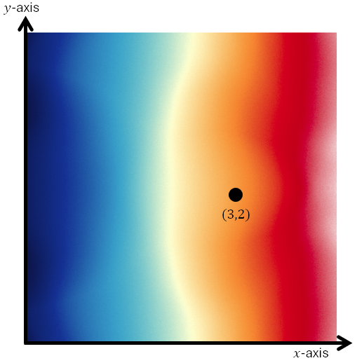

Lesson 18: Partial Derivatives
Let's review an essential idea from Calculus I.
| \(f(x)\) | \(\dfrac{df}{dx}\) |
|---|---|
| \(x^2 + 1\) | \(2x\) |
| \(x^2 + \pi\) | \(2x\) |
| \(x^2 + \ln 2\) | \(2x\) |
| \(x^2 + e^2\) | \(2x\) |
Here \(1\), \(\pi\), \(\ln 2\), and \(e^2\) are not variables. They are constants! So when differentiating those terms, we obtain zero.
In this lesson we learn about partial derivatives, and how for these we treat some variables as constants!
For each function below, treat \(y\) as a constant and differentiate with respect to \(x\).
| \(f(x, y)\) | \(\dfrac{\partial f}{\partial x}\) |
|---|---|
| \(x^2 + y\) | \(2x\) |
| \(x^2 + e^y\) | \(2x\) |
| \(x^2 + \ln y\) | \(2x\) |
| \(x^2 + \sin y\) | \(2x\) |
- By treating \(y\) as a constant, we obtain the “partial derivative of \(f(x, y)\) with respect to \(x\).”
- This is denoted as both \(\partial f / \partial x\) and \(f_x\).
- We will explore the meaning of this using the limit definition of the derivative.
- We will discuss a physical interpretation involving the rate of change in one direction.
An Example
Given the function below, treat \(y\) as a constant and differentiate with respect to \(x\).
An Example
Confirm the result from the previous problem agrees with the limit definition of the derivative, when we keep \(y\) constant and allow \(x\) to change by a small amount, \(\Delta x\).
Suppose we have a function of several variables.
We find a partial derivative by differentiating with respect to one variable, treating all the others as constants.
An Example
The function below gives the temperature \(T\), in \(^\circ\mathrm{C}\), at each point in the \(xy\)-plane.

- Evaluate and interpret \(T(x, y)\) at the point \((3, 2)\).
- Evaluate and interpret the partial derivative of the temperature with respect to \(x\) at the point \((3, 2)\).
- Evaluate and interpret the partial derivative of the temperature with respect to \(y\) at the point \((3, 2)\).
Part (a)
At the point \((3, 2)\), the temperature is approximately \(9.9^\circ\mathrm{C}\).
Part (b)
If we stand at the point \((3, 2)\) and face the direction of the positive \(x\)-axis, the temperature is increasing at a rate of \(6^\circ\mathrm{C}\) per unit of distance.
Part (c)
If we stand at the point \((3, 2)\) and face the direction of the positive \(y\)-axis, the temperature is decreasing at a rate of about \(0.42^\circ\mathrm{C}\) per unit of distance.